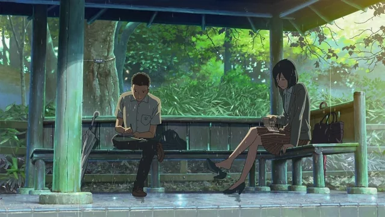

O Jardim das Palavras
Takao Akizuki é um estudante de 15 anos que sonha em ser sapateiro. Em manhãs chuvosas, ele mata aula para desenhar sapatos em um belo jardim. Um dia, ele encontra Yukari Yukino, uma mulher misteriosa de 27 anos, bebendo cerveja no mesmo jardim.
Eles continuam a se encontrar e a conversar apenas em dias chuvosos, desenvolvendo uma conexão improvável. Ambos buscam refúgio da vida real, mas seus problemas pessoais podem impedi-los de realmente se aproximarem.
ÁUDIO:
Japonês
LEGENDAS:
Português (Brasil), Inglês
CLASSIFICAÇÃO:
12
Temas Sensíveis
GÊNEROS:
NOTA:
7.4/10